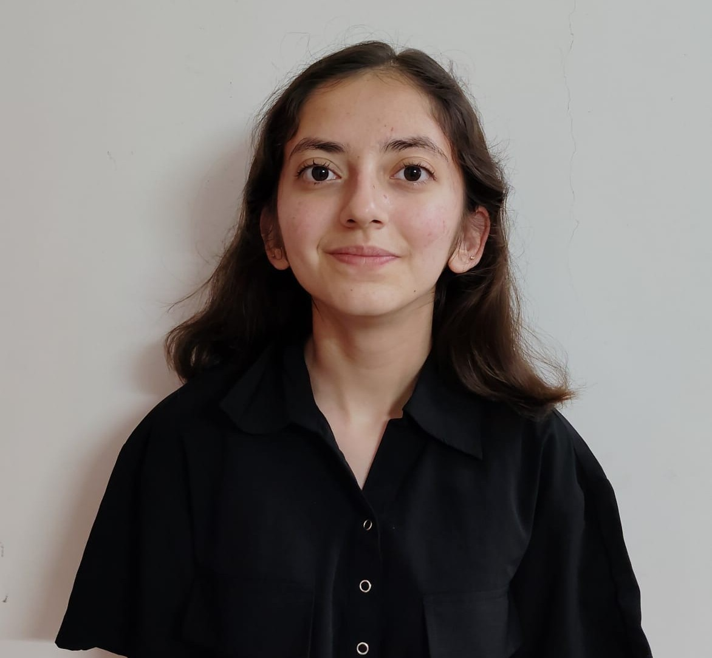

Hi! I'm Kashish.
I'm a Math student at the Indian Institute for Science Education and Research, Pune. After spending four years trying to find a balance between pure and applied math,
I found a home in Complex Systems last year. All my time is now spent on exploring various facets of the subject.
I am also (trying to be) a mathematician. I have developed an interest in probability theory, which I hope to apply to complex systems in my future research.